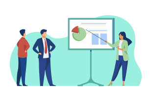

Buscamos equipos de todos los sectores, en todo el mundo, que quieran generar cambios mediante la contratación abierta. Lea más para saber si es elegible.
Todos los equipos postulantes deben:
Tener un proyecto que proponga usar la contratación abierta para lograr alguna de estas tres metas: combatir la corrupción, favorecer la sostenibilidad o asegurar la inclusión.
Ser un gran equipo con al menos cuatro personas indispensables para implementar el proyecto, incluidos dos líderes de equipo, un gestor de relaciones y expertos en contrataciones y datos.
Estar dispuesto a participar plenamente en el programa de 18 meses.
¿Qué características tiene un buen candidato para Lift?
Equipos dinámicos y colaborativos
Su equipo debe contar con un gestor de relaciones que sepa generar apoyo político y tenga habilidad para los trámites burocráticos, un experto en contrataciones que sepa desenvolverse en el sistema de contrataciones, un experto técnico y/o de datos que esté familiarizado con la publicación, el análisis y el uso de datos de contratación, y/o con el uso de soluciones tecnológicas, y dos líderes de equipo que tengan la autoridad y la capacidad de coordinar al equipo y llevar adelante el proyecto.
Objetivos y planes para generar impacto a partir de la contratación abierta.
Lift está abierto a equipos de todo el mundo que tengan interés en utilizar las contrataciones como una herramienta para conseguir mejores resultados económicos, sociales o ambientales. Usted tiene una meta clara en mente y un problema que está intentando solucionar —a nivel nacional, regional o metropolitano—, que se refiere a uno de los temas de nuestras preguntas desafío. También ha definido con claridad quienes serán sus beneficiarios y puede decidir qué personas de su comunidad se beneficiarán con este proyecto.
Proyectos que apuntan a producir cambios sistémicos.
Lift se utiliza para proyectos de reforma sistémica, que tienen por objeto realizar avances en políticas, procesos, capacidades y datos. Lift no está destinado al desarrollo de capacidades generales sobre contratación abierta o incidencia. Si bien la capacitación, los talleres y las publicaciones y herramientas de datos abiertos son importantes, no pueden constituir la totalidad de su proyecto de Lift; deben ser solo un medio para conseguir su objetivo sistémico.
Proyectos con aceptación e impulso, en todos los niveles de madurez.
Su proyecto de reforma ya debe contar con la aceptación y el apoyo de algunos líderes de mayor jerarquía que pueden ayudar a que el proyecto avance, realizar cambios significativos y superar la resistencia que pueda haber. Los equipos pueden estar trabajando en proyectos que se encuentren en diferentes etapas de desarrollo. Es posible que usted esté emprendiendo una nueva iniciativa, o que esté abocado a perfeccionar y llevar a mayor escala una solución que ya puso a prueba.
Equipos que tienen la capacidad y el poder de impulsar cambios.
El propósito primordial de Lift es que usted logre la capacidad para hacer realidad su gran idea. Usted debe contar con un equipo dispuesto a dedicar una cantidad de tiempo significativa para impulsar este proyecto en forma semanal, líderes de equipo que puedan comprometerse mientras dure el programa, infraestructura de datos y TI, y un presupuesto para financiar su tiempo y sus actividades esenciales. Le interesa que la comunidad le comunique cómo puede responder mejor sus necesidades.
Equipos que reúnen a aliados en la reforma.
Hemos visto que los equipos de reformas de contratación más sólidos y exitosos suelen trabajar conjuntamente en distintos sectores y espacios, por lo que buscamos, en especial, colaboraciones entre distintos departamentos o entre distintas organizaciones. Alentamos enfáticamente a los equipos a postularse como coalición de actores. Como parte de la postulación, también solicitamos el compromiso de sus líderes conjuntos del programa durante 18 meses, y preferimos que provengan de dos organismos, departamentos u organizaciones diferentes, a fin de favorecer la colaboración en sus respectivas entidades. Sin embargo, también se considerará a solicitantes independientes provenientes de la sociedad civil/organizaciones sin fines de lucro u organismos gubernamentales con postulaciones y equipos sobresalientes.
Abordajes que podrían replicarse o ampliarse.
En el pasado, varios equipos de Lift han utilizado el programa para probar nuevos enfoques que, luego, han ampliado en más regiones, sectores u organismos después de finalizado el programa. Estamos interesados en apoyar proyectos que tengan este potencial. Analice si su proyecto incluye procesos, herramientas o cambios que usted podría mejorar y adaptar para que otros los incluyan en su labor.
Selección
Las postulaciones se calificarán en función de los siguientes criterios claves:
1
El potencial impacto del proyecto propuesto para mejorar la calidad de bienes, obras o servicios públicos y la solidez del plan para alcanzar los objetivos del proyecto.
2
El poder para realizar cambios que tiene el equipo, incluidos la aceptación política y el apoyo de actores interesados clave.
3
La capacidad del equipo central para implementar el proyecto y abordar los desafíos.
El proceso
Hemos elaborado un proceso de postulación de dos pasos:
Postulación—abierta

Propuesta inicial y entrevista—mediante invitación únicamente
El personal de OCP evaluará todas las postulaciones escritas. Se invitará a los postulantes más competitivos a presentar su propuesta y a mantener una entrevista. Se seleccionarán hasta 9 equipos para participar en Lift, y los ganadores se anunciarán en julio.
Si bien nuestro objetivo es elegir aquellos proyectos que tengan el mayor potencial de impacto en todo el mundo, las decisiones finales sobre la selección también se realizarán teniendo en cuenta la diversidad regional y temática, así como la capacidad del equipo de OCP y los recursos de las organizaciones.
Queremos ayudarle a preparar la postulación más sólida posible. Comuníquese con su gerente regional para recibir comentarios y aportes durante el proceso de postulación.
Si su equipo no es seleccionado.
Lift es un programa sumamente competitivo. Todos los postulantes serán notificados tan pronto como sea posible si no resultan seleccionados para avanzar en el proceso de postulación. También brindaremos comentarios directos sobre las presentaciones e identificaremos maneras alternativas en las que podemos trabajar con usted. A su vez, si usted tiene un proyecto sólido, pero no es seleccionado para Lift, quizás podamos ayudarlo de otras maneras.
Lift es solo una de las formas en las que brindamos apoyo a nuestros socios. También organizamos con frecuencia llamadas comunitarias, que se anuncian en nuestra página comunitaria el grupo de Google de OCDS, el boletín informativo, Twitter and Facebook y en redes sociales. Puede comunicarse con el equipo de OCP escribiendo a engage@open-contracting.org si tiene preguntas sobre la implementación del estándar de datos.
¿Listo para comenzar?
Buscamos equipos que tengan grandes ideas sobre cómo usar la contratación abierta para combatir la corrupción y fortalecer las instituciones democráticas, proteger el medioambiente, mejorar la resiliencia climática o promover la inclusión social.